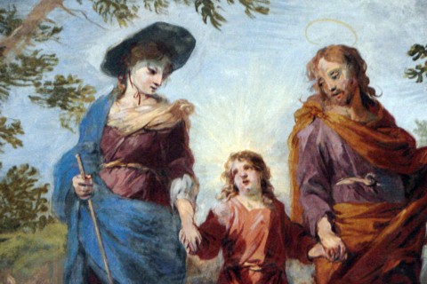
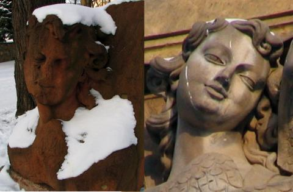
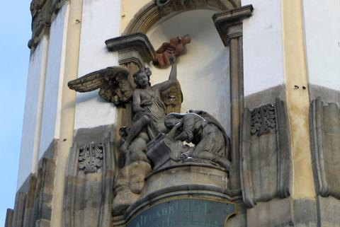
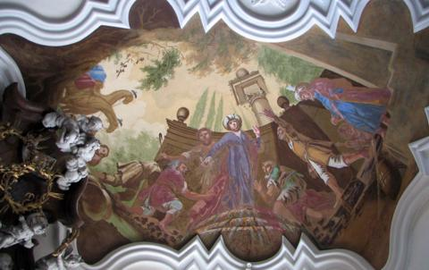
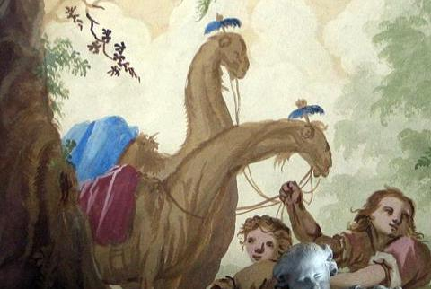
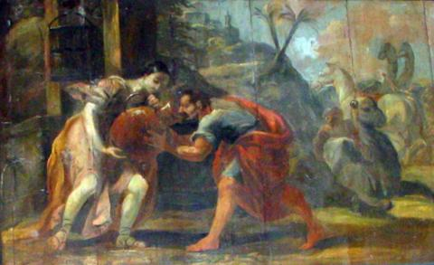
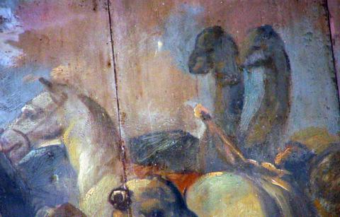

kilka ciekawostek
Na tej stronie chcia³bym zebraæ kilka informacji które zwi¹zane s¹ z krzeszowskimi zabytkami a s¹ mniej znane b¹dŸ te¿ s¹ po prostu ciekawostkami :-)
1.
Wielk¹ rzadkoœci¹ jest przedstawienie wizerunku Matki Bo¿ej w kapeluszu - a taki obraz znajdziemy w krzeszowskim koœciele œw. Józefa w scenie smutku "Tajny powrót z Egiptu".
|  | Zdjêcie zosta³o wykonane 13 sierpnia 2007 roku i udostêpnione mi przez turystê (Tadeusza M.) dla którego jednym z powodów wizyty w Krzeszowie by³a w³aœnie chêæ zobaczenia owego obrazu. Za udostêpnienie zdjêcia bardzo dziêkujê.
kliknij na zdjêcie z lewej strony aby powiêkszyæ |
2.
Cherubin na placu koœcielnym.
|  | Przy wejœciu na plac koœcielny, po lewej stronie, mo¿na zobaczyæ cherubina z czerwonego piaskowca. Ma³o kto jednak wie, ¿e jest to czêœæ dawnej elewacji koœcio³a klasztornego. Podczas prac remontowych prowadzonych w latach 1938-44 czêœæ rzeŸb z elewacji zosta³a wymieniona na nowe. Na zdjêciu z lewej strony widoczny jest cherubin "stary" z czerwonego piaskowca (po lewej), stoj¹cy dziœ przy wejœciu na plac oraz cherubin "nowy" z elewacji koœcio³a (po prawej).
kliknij na zdjêcie z lewej strony aby powiêkszyæ zdjêcia wykonano 30-01-2005 |
|  | Dzisiaj jedynym elementem elewacji krzeszowskiego koœcio³a wykonanym z czerwonego piaskowca jest Duch Œwiêty - Go³êbica ze sceny Zwiastowania.
kliknij na zdjêcie z lewej strony aby powiêkszyæ zdjêcie wykonano 30-01-2005 |
3.
Jak pisze Witold Papierniak w swoim opisie koœcio³a œw. Józefa: "Wœród zwierz¹t w orszaku trzech króli zauwa¿amy jakby konie, jednak z nietypowo d³ugimi szyjami. To wielb³¹dy. Niestety maluj¹cy je (raczej uczniowie Willmanna) nie wiedzieli, jak naprawdê one wygl¹daj¹. W XVII i XVIII wiekach nie by³o jeszcze telewizji, fotografii ani ogrodów zoologicznych. W 1683 roku wielb³¹dy dotar³y wraz z wojskami tureckimi pod Wiedeñ, ale na Œl¹sk ju¿ nie. Artyœci malarze mogli zatem nie wiedzieæ, jak one wygl¹daj¹. Prawdopodobnie ktoœ udzieli³ im informacji, ¿e tak jak konie, tylko szyje s¹ u nich d³u¿sze, no i tak te¿ to zosta³o przedstawione. Mo¿e równie¿ chodzi³o o to, by okolicznych ch³opów nie przeraziæ zbytnio widokiem zupe³nie nieznanych im zwierz¹t, które mog³yby byæ odczytane za wcielenie jakichœ si³ nieczystych? Pamiêtajmy, ¿e œwi¹tynia ta by³a koœcio³em parafialnym i brackim." Poniewa¿ temat wielb³¹dów wyda³ mi siê ciekawy poni¿ej przedstawiam kilka zrobionych przeze mnie zdjêæ krzeszowskich wielb³¹dów (niestety, jeszcze bez tych z koœcio³a œw. Józefa).
|  | Wielb³¹dy w koœciele NMP.
kliknij na zdjêcie z lewej strony aby powiêkszyæ Zdjêcie wykonano 30-01-2005 |
|  | Wielb³¹dy w koœciele NMP.
kliknij na zdjêcie z lewej strony aby powiêkszyæ Zdjêcie wykonano 30-01-2005 |
|  | Kolejnym miejscem w Krzeszowie gdzie mo¿emy znaleŸæ namalowane wielb³¹dy jest Betlejem. W pawilonie na stawie wœród dolnych malowide³ znajdziemy scenê "Eliezar i Rebeka przy studni" gdzie w prawym górnym rogu widaæ wielb³¹dy.
kliknij na zdjêcie z lewej strony aby powiêkszyæ Prezentowane tutaj dwa zdjêcia z Betlejem zrobi³em 1 lutego 2005 roku kilka minut po godzinie 16. Niestety, wewn¹trz pawilonu by³o ju¿ doœæ ciemno ... |
|  | Wielb³¹dy z krzeszowskiego Betlejem.
kliknij na zdjêcie z lewej strony aby powiêkszyæ |

{kind=link}
{kind=link}
{kind=link}
{kind=link}
{kind=link}
{kind=link}
{kind=link}